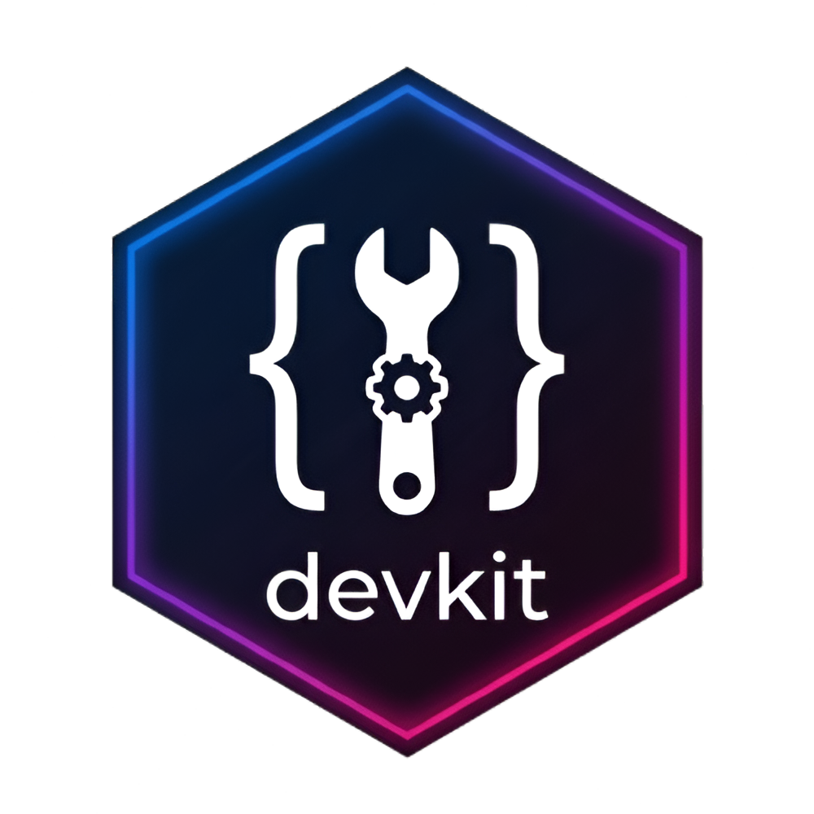

Reproducibility and Session Auditing Workflows
reproducibility-auditing.RmdIntroduction
Reproducibility is the cornerstone of robust data science and package development. However, R scripts often introduce hidden side effects—modifying global options, graphics parameters, or directory paths—or fail when run in a clean environment.
devkit provides a suite of auditing tools to monitor and
guarantee reproducibility.
🕵️ Auditing Script Side Effects
R scripts often modify settings like options(),
par(), or the working directory (setwd()). If
a script does not restore these settings on exit, it leaves the user’s
environment in a mutated state.
audit_script() monitors a target script for such side
effects. It runs the script, compares the environment’s parameters
before and after, and provides an interactive choice to revert
changes.
# Audit a script for environment side-effects
audit_script("scripts/generate_plots.R")⚠️ Detecting Namespace Masking
Namespace conflicts occur when multiple attached packages export
functions with the same name (e.g., filter() in both
dplyr and stats). This can lead to silent bugs
if the package search path changes.
detect_masking() identifies all conflicts between
currently attached packages and provides a report of conflicts and
resolution paths.
# Detect all namespace masking in the current session
mask_report <- detect_masking()
# Check detected conflicts
print(mask_report$conflicts)🧪 Clean-Room Simulation
To ensure that your script does not rely on variables or objects defined in your active global environment, you should test it in a vanilla R session.
simulate_clean_room() launches a separate, clean R
process (using R --vanilla) to execute the script and
returns the result, verifying that the script is truly
self-contained.
# Run the script in an isolated vanilla R session
clean_res <- simulate_clean_room("scripts/model_fitting.R")
print(clean_res$success) # TRUE if the script executed with exit code 0📸 Session Snapshots for Portability
If you need to share your code or deploy it to production, you must document the exact versions of the packages attached to your current session.
export_snapshot() scans your session for external
packages and generates a reproducible installer script. Running this
generated script on another machine installs the exact package versions
required.
# Export a reproducibility script lock file
export_snapshot(
filename = "reproduce_env.R",
include_versions = TRUE
)⏱️ Performance Benchmarking across Git Branches
When refactoring code to improve speed, you should verify and quantify the performance improvement across Git branches.
benchmark_branches() runs a specific benchmarking script
against multiple Git branches (e.g., main vs. a feature
branch), automatically switching branches, executing the script, timing
it, and restoring your original Git state when finished.
# Compare execution times between development and main branches
bench_results <- benchmark_branches(
script = "scripts/benchmark_heavy_load.R",
branches = c("main", "feature/optimise-joins"),
reps = 3
)
# Inspect the timing comparison dataframe
print(bench_results)